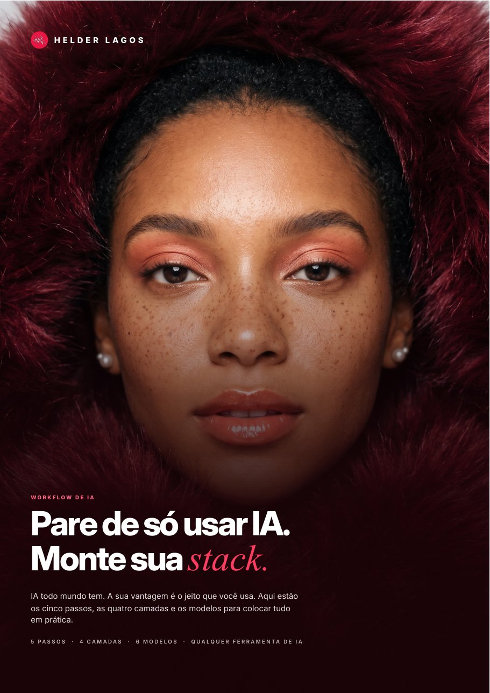

HELDER LAGOS
Guia gratuito · Workflow de IA
Pare de só usar IA. Monte sua stack.
IA todo mundo tem. A sua vantagem é o jeito que você usa. Aqui está o método completo do carrossel, em 8 páginas.
- 05passos para sair da resposta média
- 04camadas: olhar, sistema, contexto e critério
- 06modelos prontos para usar em qualquer ferramenta
ou abrir direto no navegador
